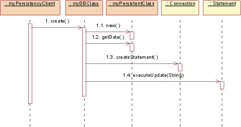

| 概念：设计和实施机制 |
 |
|
设计机制与实施机制简介设计机制是对相应分析机制的改进（另请参阅概念：分析机制）。设计机制为概念分析机制添加具体的详细信息，但止步于需要特定技术 － 例如特定供应商的实施（比如面向对象的数据库管理系统）。与分析机制相同，设计机制可以实例化一种或多种模式，在这种情况下为体系结构或设计模式。 类似地，实施机制是对应设计机制的改进，使用例如特定编程语言和其他的实施技术（例如特定供应商的中间件产品）。实施机制可实例化一个或多个代码模式或实施模式。 示例：设计机制的特征请考虑分析机制的持久性：
这些对象将需要不同的持久性支持；可确定设计机制对于持久性支持所具有的以下属性：
请注意，这些速度“慢”只是与内存存储器相比而言的。显然，在某些环境中，使用高速缓存可明显增加访问次数。 改进设计机制与实施机制之间的映射最初，设计机制和实施机制之间的映射可能不是最佳的，但它将使项目运行、确定尚不可见的风险并触发进一步的调查和评估。当项目继续进行并获得更多知识时，需要改进映射。 以迭代方式改进设计机制与实施机制之间的映射，从而消除冗余路径，进行“自顶而下”和“自底而上”两方面的工作。 自顶而下地工作。“自顶而下”工作时，经改进的新用例实现将通过所需的分析机制对所需的设计机制增加新的需求。这样的新需求可能揭示设计机制的更多属性，从而强制分开这两个机制。期间还必须在系统的复杂度和性能之间达到平衡点：
自底而上地工作。当“自底而上”工作时，通过调查可用的实施机制，可能会发现这样的产品：它们能够同时满足若干个设计机制，但却要求您对设计机制进行某种修改或重新划分。您想使用最少的实施机制，但太少也会导致性能问题。 一旦决定使用 DBMS 存储类 A 的对象，您可能会想使用它存储系统中的所有对象。这样做会非常低效或非常麻烦。不是所有需要持久存在的对象都要存储在 DBMS 中。一些对象可能持久存在，但可能只有当时运行的那个应用程序频繁访问它，而其他应用程序只是偶而访问它。这时，可能最好的办法是采用混合策略 － 将对象从 DBMS 读进内存然后定期同步。 示例 可以将航班存储在内存中用于快速访问，同时存储在 DBMS 中用于长期保存；但这需要使两者同步的机制。 将多个设计机制与一个客户机类关联作为不同属性之间的平衡点，这并不少见。 因为实施机制经常在成品组件（操作系统和中间件产品）中捆绑出现，所以需要进行某些基于成本、阻抗失配或样式统一的优化。此外，机制经常是相互依赖的，使得将服务清楚分成设计机制很困难。 示例
改进贯穿整个精化阶段，而且始终是在寻求以下两个方面的平衡：
总体目标始终是具有简单明确的一组机制，为大型系统提供概念上的完整、简单和精确。 示例：将设计机制映射到实施机制持久性设计机制可映射到实施机制，如下所示：
分析机制和设计机制之间的可能映射。虚线箭头表示“专门化”，即表示设计机制的特征继承于分析机制，但应予以专门化和改进。 一旦完成了机制的优化，就会存在以下映射：
该映射必须从两个方向都可以实现，以便在更改实施机制时，易于确定客户机类。 描述设计机制
设计机制及其使用方法的详细信息记录在 和分析机制相同，可利用协作对设计机制进行建模，设计机制可实例化一种或多种体系结构或设计模式。 示例：持久性机制此示例使用从 JDBC™（Java 数据库连接）引出的、基于 RDBMS 的持久性的模式实例。尽管我们在这里只是展示设计，但 JDBC 为某些类提供实际代码，因此从这里展示的内容到实施机制之间只有一步之遥。 图静态视图：JDBC 显示了协作中的类（严格地说是分类器角色）。
静态视图：JDBC 以黄色填充的是提供的类，其他类（myDBClass 等）是由设计人员绑定以用于创建机制的。 在 JDBC 中，客户端将使用 DBClass 来读写持久数据。DBClass 负责使用 DriverManager 类访问 JDBC 数据库。一旦打开数据库连接，DBClass 就可创建 SQL 语句，这些 SQL 语句将被发送到底层的 RDBMS，并使用 Statement 类执行。Statement 类涉及什么“告诉”数据库。SQL 查询结果在 ResultSet 对象中返回。 DBClass 类负责使另一个类实例持久。它了解 OO - RDBMS 映射并可实施与 RDBMS 对接的行为。DBClass 将对象序列化，将其写入 RDBMS，然后从 RDBMS 中读出对象数据并构建对象。每个持久类都将有相应的 DBClass。 PersistentClassList 用于返回一组持久对象，作为数据库查询（如 DBClass.read()）的结果。 我们现在展示一系列动态视图，来显示该机制实际如何运行。
JDBC：初始化 在可以访问任何持久类之前，必须进行初始化。 要初始化到数据库的连接，DBClass 必须通过使用 URL、用户和密码调用 DriverManager getConnection() 操作来装入适当的驱动程序。 操作 getConnection() 尝试建立到给定数据库 RUL 的连接。DriverManager 尝试从所注册的 JDBC 驱动程序组中选择适当的驱动程序。 参数： URL：格式为 jdbc:subprotocol:subname 的数据库 URL。此 URL 用于查找实际数据库服务器，而在此实例中不是与 Web 相关的。 用户：将建立连接的数据库用户 密码：用户密码 返回值： 到 URL 的连接。  JDBC：创建 为了创建新类，持久性客户端请求 DBClass 创建新类。DBClass 使用缺省值创建 PersistentClass 的新实例。然后，DBClass 使用 Connection 类 createStatement() 操作创建新的 Statement。该 Statement 被执行，并且数据被插入到数据库中。
JDBC：读 为了读持久类，持久性客户端请求 DBClass 执行读操作。DBClass 使用 Connection 类 createStatement() 操作创建新的 Statement。该 Statement 被执行，并且数据在 ResultSet 对象中返回。然后，DBClass 创建 PersistentClass 的新实例并用检索出的数据填充它。数据在某个集合对象（PersistentClassList 类的一个实例）中返回。 注意：传递给 executeQuery() 的字符串不必与传入 read() 的字符串完全相同。 DBClass 将构建 SQL 查询，来使用传入 read() 的条件从数据库中检索持久数据。这是因为我们不希望 DBClass 的客户需要了解数据库内部才能创建有效查询。该知识封装在 DBClass 中。
JDBC：更新 为了更新类，持久性客户端请求 DBClass 执行更新操作。DBClass 从给定 PersistentClass 对象检索数据，然后使用 Connection 类 createStatement() 操作创建新的 Statement。一旦构建了 Statement，就执行更新，使用来自该类的新数据更新数据库。 请记住：对 PersistentClass 进行“序列化”并将其写入数据库是 DBClass 的工作。这就是为什么在创建 SQL 语句之前，必须从给定 PersistentClass 中检索的原因。 注意：在上述机制中，PersistentClass 必须为所有持久数据提供访问例程，以便 DBClass 可以访问它们。这提供了对某些本应属专用的持久属性的外部访问。这是将持久性知识放在封装数据的类之外所必须付出的代价。
JDBC：删除 为了删除类，持久性客户端请求 DBClass 删除 PersistentClass。DBClass 使用 Connection 类 createStatement() 操作创建新的 Statement。该 Statement 被执行，并且数据被从数据库中除去。 在此设计的实施中，将作出关于 DBClass 到持久类的映射的某些决策，例如每个持久类有一个 DBClass，并将它们分配到适当的包中。这些包将会依赖于所提供的 java.sql（请参阅 JDBC™ API 文档）包，其中包含 DriverManager、Connection、Statement 和 ResultSet 支持类。 |


© Copyright IBM Corp. 1987, 2006. All Rights Reserved. |